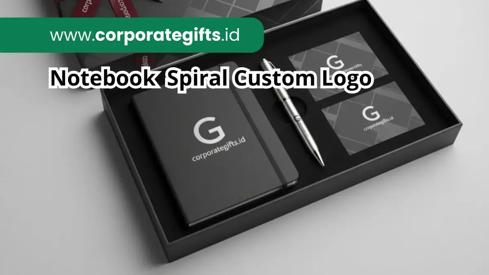

Corporate Gifts ID - Dalam dunia bisnis modern, souvenir kantor bukan lagi sekadar hadiah pelengkap seremonial, melainkan instrumen strategi branding yang nyata. Salah satu pilihan yang semakin populer di berbagai industri adalah notebook spiral custom logo. Produk ini menjadi andalan banyak korporasi, instansi pemerintah, institusi pendidikan tinggi, dan event organizer karena menghadirkan perpaduan antara kepraktisan penulisan dan estetika profesional.
Notebook spiral custom logo adalah buku catatan berjilid spiral (wire-o ring) yang disematkan identitas visual atau logo perusahaan, dirancang khusus menjadi souvenir seminar karena berbobot ringan, sangat ekonomis untuk pesanan skala besar, serta fleksibel untuk dibuka 360 derajat tanpa merusak jilidan. Kesan eksklusif pun dapat dibangun secara prima lewat variasi material sampul kanvas premium, hardcover kokoh bertekstur, maupun kombinasi kulit sintetis PU dengan teknik branding deboss, emboss emas, sablon warna presisi, hingga grafir laser nama personal.
Poin Kunci Notebook Spiral untuk Seminar:
- Ergonomi Penulisan Optimal: Jilid kawat ganda memungkinkan buku dibuka rata 180 derajat di atas meja atau dilipat balik 360 derajat saat peserta menulis sambil berdiri.
- Efisiensi Anggaran Skala Besar: Biaya produksi per unit relatif terjangkau, menjadikannya opsi paling rasional untuk konferensi dengan ratusan hingga ribuan peserta.
- Fleksibilitas Estetika: Tersedia aneka pilihan sampul mulai dari kraft ramah lingkungan, kanvas artistik modern, hingga hardcover dan kulit PU elegan.
- Eksposur Merek Berkelanjutan: Buku catatan kerja aktif digunakan berminggu-minggu bahkan berbulan-bulan setelah acara usai, memperpanjang durasi brand recall audiens.
Mengapa Notebook Spiral Cocok untuk Souvenir Seminar dan Event?
Notebook spiral memiliki serangkaian keunggulan fungsional yang membedakannya secara tegas dari notebook jilid jahit benang konvensional maupun buku binder berukuran besar. Keunggulan mekanis dan ekonomis ini menjadikannya favorit utama bagi divisi procurement dan panitia pelaksana:
- Ringan dan Mudah Dibawa: Peserta seminar atau workshop sering kali membawa berbagai materi pelatihan, laptop, dan perlengkapan pribadi. Bobot notebook spiral yang kompak memudahkan penyimpanan di dalam tas jinjing maupun goodie bag seminar.
- Fleksibilitas Desain Sampul: Desain eksterior dapat dikonsepkan dari nuansa kasual, minimalis ramah lingkungan (eco-kraft), hingga mewah berkelas eksekutif, tergantung pada jenis material sampul yang dipilih.
- Harga yang Sangat Ekonomis: Struktur penjilidan spiral memberikan efisiensi biaya yang luar biasa untuk volume pemesanan ratusan hingga ribuan eksemplar tanpa mengorbankan kualitas material.
- Kenyamanan Menulis Maksimal di Berbagai Situasi: Mekanisme spiral kawat memungkinkan halaman dibuka rata sempurna di atas meja konferensi atau dilipat ke belakang saat peserta harus mencatat materi presentasi tanpa meja.
Seluruh keunggulan di atas menjadikan notebook spiral pilihan paling solid untuk melengkapi paket seminar kit perusahaan maupun merchandise promosi event tahunan instansi Anda.
Pilihan Material Sampul Notebook Spiral Custom Logo
Banyak yang mengira notebook spiral hanya berupa buku catatan sederhana dengan sampul kertas tipis. Di CorporateGifts.ID, notebook spiral dapat dirancang menjadi produk merchandise bernilai estetika tinggi melalui pemilihan material sampul premium berikut:
1. Notebook Spiral Kanvas Artistik
Sampul berbahan kain kanvas memberikan tekstur alami yang hangat, modern, dan sangat kreatif. Material ini sangat diminati oleh perusahaan teknologi startup, agensi digital, komunitas kreatif, serta institusi pendidikan yang menginginkan kesan kekinian dan dinamis.
Contoh implementasi: Notebook spiral kanvas natural dengan aplikasi cetak full color ilustrasi visual dan logo korporat, dipadukan dengan karet elastis pengunci warna senada.
2. Notebook Spiral Hardcover Formal
Sampul hardcover berbasis karton tebal berkualitas (greyboard 30-40) dengan laminasi doff lembut (matte) atau spot UV memberikan kesan yang sangat kokoh, serius, dan formal. Sangat ideal untuk seminar bisnis tingkat nasional, simposium akademis, atau program workshop pelatihan manajemen.
Contoh implementasi: Notebook spiral hardcover hitam doff elegan dengan finishing sablon logo foil emas metalik dan pembatas pita ganda.
3. Notebook Spiral Kombinasi Kulit PU dan Kanvas
Perpaduan dua tekstur antara kulit sintetis poliuretan (PU Leather) berkualitas tinggi dan kain kanvas tenun menghadirkan karakter visual eksklusif yang sangat dinamis namun tetap memancarkan kemewahan profesional.
Contoh implementasi: Notebook spiral premium dengan sampul kulit PU cokelat tembaga, beraksen jahitan tepi presisi dan logo deboss timbul tanpa tinta di bagian muka.

Detail finishing sampul notebook spiral dengan logo custom presisi, cocok untuk cinderamata seminar korporat dan cinderamata workshop eksekutif.
Tabel Perbandingan Karakteristik Material Notebook Spiral
Untuk memudahkan tim Anda dalam memilih jenis sampul notebook yang paling cocok dengan target peserta dan anggaran yang dialokasikan, berikut panduan matriks perbandingannya:
| Tipe Material Sampul | Karakter & Tampilan | Teknik Branding Terbaik | Rekomendasi Acara | Estimasi Harga |
|---|---|---|---|---|
| Eco Kraft Board | Minimalis, ramah lingkungan, rustic cokelat | Sablon 1-2 warna, hot stamp hitam | Event ESG, workshop lingkungan, pameran publik | Rp25.000 - Rp35.000 |
| Hardcover Art Paper | Kokoh, rapi, permukaan laminasi doff / glossy | Cetak offset full color, Spot UV, Poly Emas | Seminar tahunan, training BUMN, simposium nasional | Rp35.000 - Rp55.000 |
| Kanvas Tekstil | Modern, tekstur berserat artistik, tahan gesekan | Sablon rubber, woven patch, transfer DTF | Tech conference, event startup, festival kreatif | Rp45.000 - Rp65.000 |
| Kulit PU Sintetis | Mewah, elegan, lembut saat digenggam, eksekutif | Deboss tanpa tinta, blind emboss, grafir laser | Rapat koordinasi pimpinan, VIP seminar, gift set | Rp60.000 - Rp100.000 |
Teknik Branding pada Notebook Spiral Custom Logo
Kualitas finishing logo adalah penentu utama apakah notebook spiral akan terlihat seperti buku catatan murah atau cinderamata korporat bergengsi. Di workshop CorporateGifts.ID, kami menerapkan beberapa metode branding mutakhir:
- Cetak Logo Full Color Presisi Tinggi: Menggunakan teknik digital UV print atau sablon berkualitas tinggi dengan ketepatan warna Pantone korporat yang akurat dan tidak mudah terkelupas.
- Deboss dan Blind Emboss: Menghasilkan efek lekukan ke dalam (deboss) atau timbul ke luar (emboss) pada sampul kulit PU, menciptakan kesan mewah yang bersahaja dan abadi tanpa warna berlebih.
- Hot Stamping Foil Emas / Perak: Memberikan kilau metalik elegan pada sampul hardcover hitam, biru dongker (navy), atau hijau botol gelap untuk kesan formal VIP.
- Grafir Laser Presisi: Sangat efektif untuk personalisasi nama masing-masing peserta atau narasumber pada plat logam mini di sampul notebook spiral premium.
- Kustomisasi Halaman Isi (Custom Inner Pages): Menyisipkan lembar kata sambutan pimpinan direksi, profil visi-misi korporat, ringkasan jadwal seminar, serta watermark logo di setiap lembar kertas bookpaper krem yang ramah mata.
Kapan Sebaiknya Menggunakan Notebook Spiral Custom Logo?
Fleksibilitas notebook spiral menjadikannya solusi ideal untuk aneka format agenda bisnis dan korporat, antara lain:
- Seminar, Konferensi, dan Workshop Nasional: Memfasilitasi peserta mencatat materi secara nyaman sepanjang hari, sekaligus memperkuat kredibilitas penyelenggara acara.
- Onboarding Kit Karyawan Baru: Menjadi bagian penting dari paket penyambutan karyawan baru bersama pulpen eksklusif, tumbler kantor, dan lanyard ID card.
- Merchandise Event Komunitas & Edukasi: Media branding yang bernilai guna tinggi untuk acara pelatihan kejuruan, festival literasi, maupun inkubasi bisnis.
- Pameran Dagang, Expo, dan Roadshow Korporat: Hadiah fungsional yang dibagikan kepada calon mitra bisnis potensial yang berkunjung ke booth pameran Anda.
Tips Memilih Notebook Spiral Custom Logo untuk Souvenir Seminar
Agar pengadaan souvenir notebook spiral berjalan lancar dan memberikan dampak branding yang optimal, perhatikan rekomendasi praktis berikut sebelum melakukan pemesanan massal:
- Sesuaikan Material Sampul dengan Karakter Audiens: Pilih sampul eco-kraft atau kanvas untuk audiens muda dan kreatif, atau hardcover doff dan PU leather untuk peserta setingkat manajer dan direksi.
- Pilih Ukuran yang Tepat (A5 atau B5): Ukuran A5 (14,8 x 21 cm) adalah standar emas yang paling ideal karena ringkas dimasukkan ke tas, sementara ukuran B5 menawarkan ruang tulis yang lebih leluasa.
- Perhatikan Kualitas Kertas Isi: Gunakan kertas Bookpaper krem 72-80 gsm yang nyaman di mata dan tidak tembus tinta (no bleed-through) saat digunakan menulis dengan pulpen tinta gel.
- Pilih Spiral Kawat Ganda (Wire-O Double Loop): Kawat ganda jauh lebih kokoh dan rapi dibandingkan spiral plastik tunggal, serta tidak mudah penyok saat tertumpuk di dalam tas.
- Validasi Mockup Visual Digital Sebelum Produksi Massal: Pastikan ukuran proporsi logo, margin batas potong, dan posisi spiral sudah diverifikasi dengan panduan identitas brand perusahaan Anda.
Contoh Produk Notebook Spiral Custom Logo yang Populer
Berikut beberapa konfigurasi produk notebook spiral yang paling banyak dipesan oleh klien korporat kami:
- Notebook Spiral Kanvas Custom Logo: Desain artistik kasual dengan tali elastis pengikat dan tempat pulpen di bagian samping.
- Notebook Spiral Hardcover Full Color Eksklusif: Desain cetak penuh sesuai tema visual konferensi dengan lapisan anti-gores dan jilid spiral hitam doff.
- Paket Gift Set Seminar VIP: Notebook spiral berpadu serasi dengan pulpen metal grafir nama dan flashdisk kartu di dalam kotak eksklusif custom.
Kesimpulan
Notebook spiral custom logo merupakan solusi souvenir seminar yang membuktikan bahwa kepraktisan fungsional dan kesan eksklusif dapat berjalan beriringan. Dengan opsi material sampul yang variatif, teknik kustomisasi logo yang rapi, serta efisiensi biaya produksi yang unggul, produk ini mampu menjadi duta visual yang mewakili citra profesional perusahaan Anda di meja kerja para peserta dalam jangka waktu yang panjang.
Rencanakan kebutuhan merchandise seminar dan souvenir kantor Anda bersama CorporateGifts.ID untuk mendapatkan kurasi produk terbaik, harga grosir kompetitif, serta layanan pembuatan sampel mockup digital gratis.